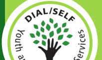

|  |
|
 |
||||||||

|
Support DIAL/SELF Current funding sources for DIAL/SELF include: U.S. Department of Health & Human Services, Corporation for National & Community Service, Massachusetts Service Alliance, Community Foundation of Western Massachusetts, TD BankNorth Foundation, Franklin County United Way Special Grants, donations from local businesses and community members. While the majority of program funding comes from contracts, most contracts require a “community match.” This is either cash or services that are required from the community in order to receive Federal, State or private foundation support. That is why community donations are so important. Your donations help to leverage all the other “outside” funding that comes back into the community. There are many ways to help out… Donate to Our Annual Appeal You can make a donation on-line through our partners at Network for Good by clicking here or on any of the “donate now” buttons throughout the web site. You can also send a check or money order to: Or call Phil Ringwood, Executive Director, at 413-774-7054 x115 to discuss other options.
Everyday Support The internet has opened up many ways to support non-profit organizations. With simple things like searching the web or buying something online at a major retailer, you can be raising money to support DIAL/SELF. Just by doing the things you already do. Below are a few everyday ways to help out. Search the internet using GoodSearch: Search engines generated close to $8 billion in revenue from advertisers. GoodSearch has created a way for some of that money to find its way to non-profits. How does it work?
You can also add a GoodSearch toolbar to your web browser by clicking here.
When was the last time you bought something online from Dell, E-bay L.L. Bean or some other retailer? Have you made travel plans using Expedia or Travelocity? If so you could have a percentage of those transactions donated back to DIAL/SELF by going through the GoodShop web portal. At over 700 stores you get the same great online deals as going to the sites directly, with the added bonus of having part of the sale used to support needed services. Just go to www.goodshop.com and select DIAL/SELF from the cause list. Sign up for the Rite Aid KidCents Program:
Stay connected and tell your friends: The number of people using social networking sites like Twitter and Facebook to stay connected and up-to-date is growing every day. If you have a Twitter or Facebook account, consider adding DIAL/SELF as a friend and let your friends know that you support the work we are doing. The more people who know what DIAL/SELF does for the community, the stronger we become. You can access the DIAL/SELF Profiles by clicking on the icons in the right hand column.
Wish List! You can also help support local youth by donating any of the items listed below that are needed by our programs and youth living in our apartments:
Call Starr at 774-7054, ext. 113 for further information or to arrange a donation drop-off. Please do not drop off items without calling first. Thank you. Youth Investment Fund A Socially Responsible Investment (SRI) Opportunity. DIAL/SELF Youth and Community Services occasionally borrows funds for the expansion of programs, social enterprise seed funding, working capital, and bridge financing. Potential lenders include residents, businesses, churches, and non-profit groups who want to support community-based services for youth, but who would prefer at this time to lend money for this purpose rather than make an outright gift. Click here for more information on investing in youth (pdf)
|
|
||||||||
|
|